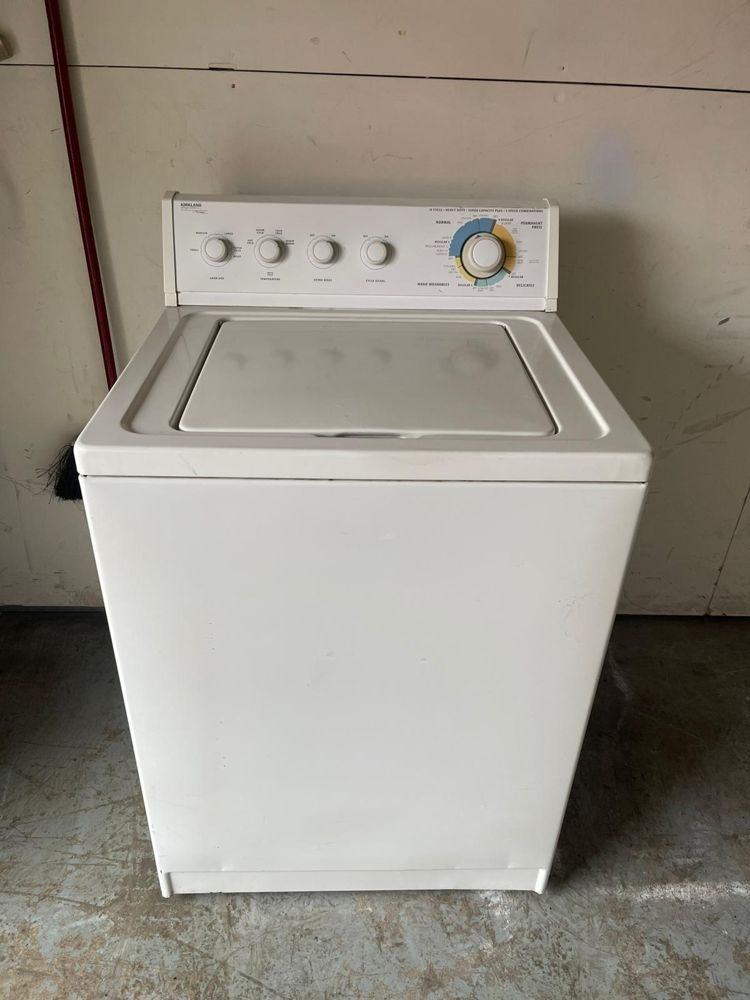

Nevada Pickup Requests
We review washers, dryers, refrigerators, freezers, stoves, ranges and ovens. Working and reusable appliances receive priority. Free pickup is confirmed only after condition, location, access, demand and available route or partner coverage are reviewed.
Priority Nevada Regions
Las Vegas Valley
Las Vegas, Henderson, North Las Vegas and surrounding Clark County communities through one regional hub.
Reno Metro & Northern Nevada
Reno, Sparks and nearby northern Nevada requests may be reviewed when route or partner coverage is available. Longer routes depend heavily on condition and load size.
Other Nevada locations may also submit requests. Geographic information is organized by meaningful regions rather than separate city landing pages.
Free Pickup Qualification
Fully working major appliances may qualify for free pickup. Mixed loads may qualify when approximately 80% of the major appliances are working. Minor repair needs may be considered. A nonworking appliance alone generally does not qualify.
Condition and Access
For washers include fill, drain and spin status. For dryers include heat/tumble and gas or electric. For refrigerators/freezers include cooling status and clear photos. For stoves include fuel type and known burner, oven or control problems.
Report garages, driveways, upper floors, elevators, stairs, gates, narrow doors, loading restrictions and other removal issues before scheduling.
Las Vegas Valley Removal Details
Las Vegas Valley requests should include the exact city and ZIP code because travel time and route capacity can differ between Las Vegas, Henderson, North Las Vegas and outlying Clark County communities. Complete details help determine whether the appliance fits an available direct or partner route.
Homes and gated communities
Report guard gates, entry codes, side-yard access, garage placement, long driveways and required appointment windows. Confirm whether the appliance must pass through the home.
Condos and apartments
Include the building number, floor, elevator, stair count, loading zone and property rules. Tell us if management requires insurance or advance notice from a pickup provider.
Desert temperatures
Keep working refrigerators, freezers and electronic appliances protected from direct sun and extreme heat until pickup is confirmed. State whether cooling appliances are currently plugged in.
Photos, Measurements and Testing
Clear photos help evaluate reusable condition before a Nevada route is scheduled. Include the front, sides and interior, plus a model label when available. Measure large refrigerators, freezers and ranges and identify gas or electric connections.
Test every appliance separately. A washer request should report fill, agitation, drain and spin; a dryer should report tumble and heat; refrigerators and freezers should maintain temperature. For a multiple-appliance load, list which items work and which need repair.
Reno, Sparks and Longer Nevada Routes
Reno, Sparks, Carson City and other northern Nevada locations may submit requests for availability review. These locations are not represented as guaranteed daily routes. Reusable condition, load size, distance and current partner capacity are especially important for longer trips.
Rural and remote Nevada requests must be confirmed for the exact address. Do not disconnect, move outside or leave an appliance unattended based only on a city being mentioned on the website. If free pickup is unavailable, review the old-appliance disposal options.
Authentic Appliance Example
